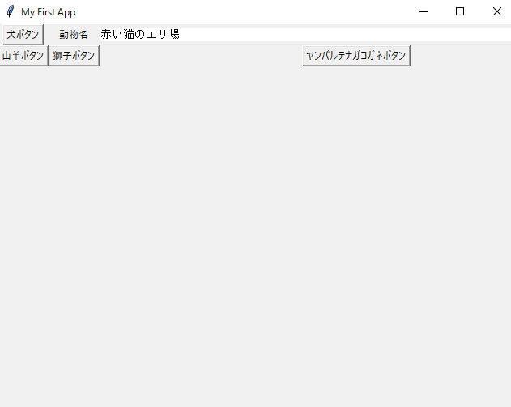

import tkinter as tk
print ('HelloWorld tkinter')
root = tk.Tk() # メインウィンドウ
root.title('My First App')
def btn_click():
#text1 = textbox.get("1.0","end")
text1 = textbox.get('1.0', 'end -1c')
print(text1)
print('ボタンがクリックされました')
root.geometry('640x480') # メインウィンドウのサイズ
btn = tk.Button(root, text = '犬ボタン', command=btn_click)
btn.grid(row= 0, column=1)
lbl = tk.Label(root, text = '動物名')
lbl.grid(row= 0, column=2)
textbox = tk.Text(width= 90, height= 1)
textbox.grid(row= 0, column=3)
textbox.insert('1.0', '赤い猫のエサ場')
btn4 = tk.Button(root, text = '山羊ボタン').grid(row= 1, column=1)
btn5 = tk.Button(root, text = '獅子ボタン').grid(row= 1, column=2)
btn6 = tk.Button(root, text = 'ヤンバルテナガコガネボタン').grid(row= 1, column=3)
root.mainloop() # ウィンドウを表示
実行
ウィジェットの配置について
ボタンやテキストボックスをPythonではウィジェットと読んでいる。
import tkinter as tk
from tkinter import filedialog
root = tk.Tk() # メインウィンドウ
root.title('tkinterのファイル選択ダイアログ')
def btn_click():
idir = 'C:\\'
file = tk.filedialog.askopenfile(initialdir = idir)
if file:
fn = file.name
textbox.delete('1.0', 'end') # テキストボックスのクリア
textbox.insert('1.0', fn)
print(fn)
root.geometry('480x180')
btn = tk.Button(root, text = 'フォルダ選択', command=btn_click)
btn.grid(row= 0, column=1)
textbox = tk.Text(width= 90, height= 2)
textbox.grid(row= 0, column=2)
textbox.insert('1.0', 'ファイルパス')
root.mainloop()
import tkinter as tk
from tkinter import filedialog
root = tk.Tk() # メインウィンドウ
root.title('tkinterのフォルダ選択ダイアログ')
def btn_click():
idir = 'C:\\'
dir_path = tk.filedialog.askdirectory(initialdir = idir)
textbox.delete('1.0', 'end') # テキストボックスのクリア
textbox.insert('1.0', dir_path)
print(dir_path)
root.geometry('480x180')
btn = tk.Button(root, text = 'フォルダ選択', command=btn_click)
btn.grid(row= 0, column=1)
textbox = tk.Text(width= 90, height= 2)
textbox.grid(row= 0, column=2)
textbox.insert('1.0', 'ディレクトリパス')
root.mainloop()